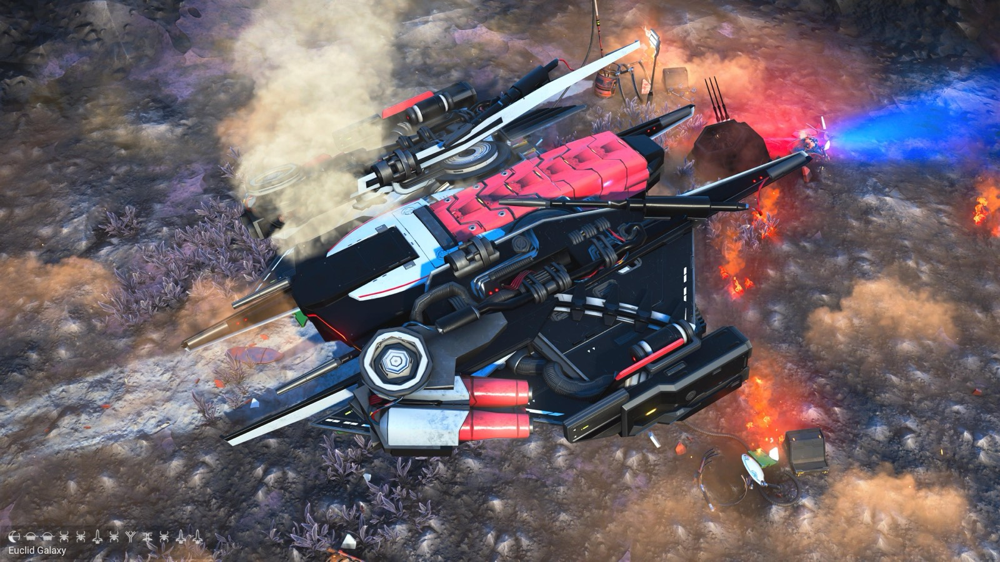
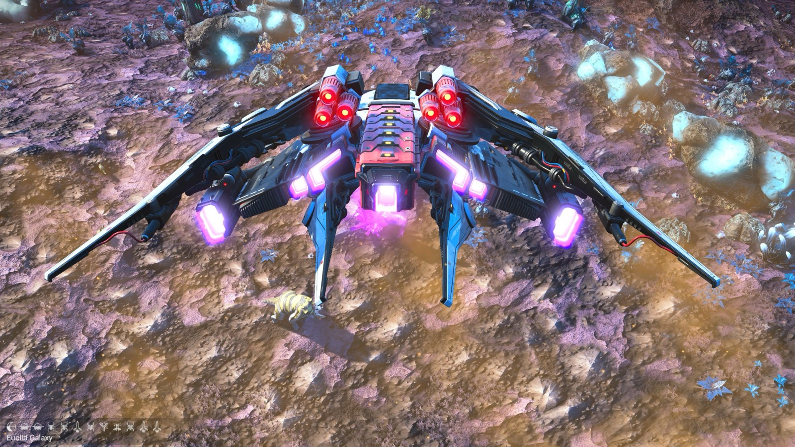
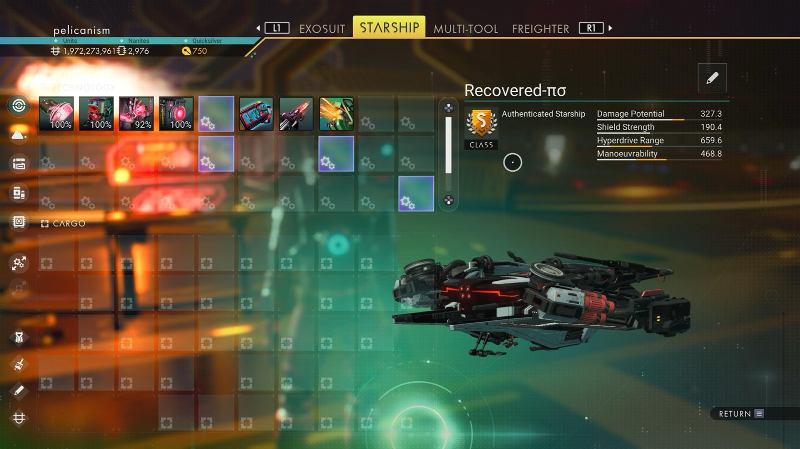

Waypoint 8
Dabash-Yuxi



- Distance from core
- 1,141,469 LY
- Jump from previous
- 3,746 LY
- Planet coordinates
- +34.54, -81.33
- Ship as found
- B-class, 39+27 slots
- S-class ship
- Recovered-πσ
- Damage
- 327.3
- Shield
- 190.4
- Hyperdrive
- 659.6
- Manoeuvrability
- 468.8